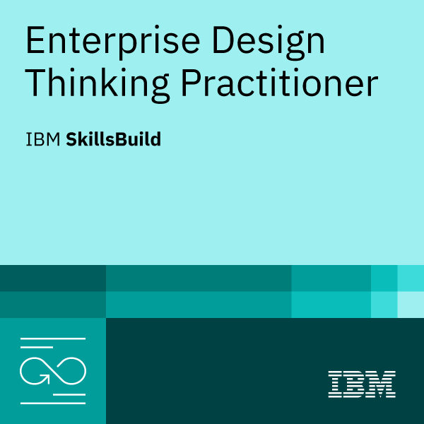
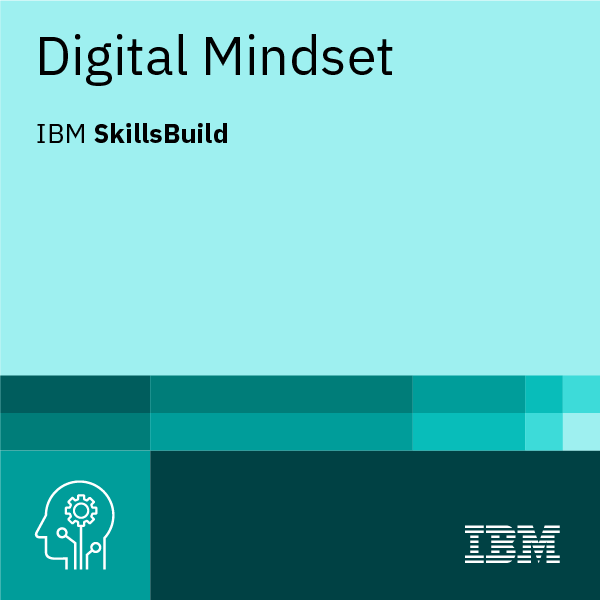
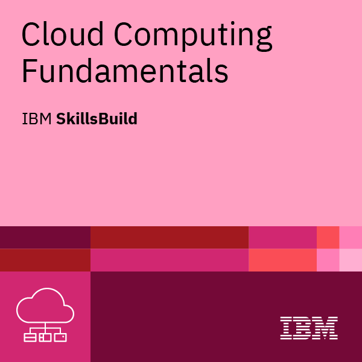

Mirá, te la hago corta: el software hoy no es solo código, fierros o una pantalla que brilla 💻. Es algo mucho más profundo. La tecnología, cuando está bien hecha, es una herramienta que toca vidas ❤️. Se trata de cómo te sentís cuando resolvés un problema que te tenía loco o de cómo una empresa deja de ver números para empezar a ver personas 👥. No estamos acá para picar teclas, estamos acá para diseñar experiencias que nos hagan la vida un poquito más fácil a todos. De eso se trata este viaje 🚀.
Video: El factor humano y la metodología Design Thinking aplicada a la resolución de problemas complejos.
¿Alguna vez escuchaste lo de Windsor Airlines? Tenían un lío bárbaro ✈️: los vuelos salían tarde y no sabían por qué. Podrían haber gastado millones en motores nuevos, pero usaron los "5 porqués" y llegaron al hueso: el problema no eran los aviones, eran los empleados que estaban quemados por el estrés 😓.
Acá es donde entra el Design Thinking de IBM 💼. No es magia, son tres principios claros: enfocarse 100% en el usuario 👤, animarse a fallar rápido con prototipos (antes de quemar la guita 💸) y armar equipos diversos donde todos pinchen y corten ✂️. Todo gira en un bucle constante: Observar 👀, Reflexionar 🤔 y Hacer 🛠️. Si no te movés, te estancás.
Para masticar: ¿Cuántas veces trataste de arreglar un problema "técnico" sin preguntar cómo se sentía la persona que lo usaba? ¿Te animás a fallar hoy para ganar mañana?
Podcast: Diseñar experiencias humanas a gran escala y la importancia de la observación directa.
Reflexión sobre el experimento del florista y el marco de trabajo de IBM.
Video: El concepto de ser "gimnastas digitales" para adaptarnos al cambio.
Podcast: Análisis del ciclo de hábitos y casos de éxito como Nike.
El mundo se mueve rápido y si sos rígido, te quebrás 🫙. Por eso hablamos de ser "gimnastas digitales" 🤸. Pensá en el choque entre Raj y Peter en la carpintería: uno se adaptó, el otro se quedó en el molde 🪵.
Mirá a Kodak 📷: eran los reyes, pero el orgullo los cegó y se hundieron. En cambio, Nike la jugó de diez 👟: entendieron que ya no solo vendían zapatillas, sino una plataforma digital. Para no volverte loco, podés usar el ciclo de los hábitos: un Recordatorio ⏰ para arrancar, una Rutina 🔁 clara y una Recompensa 🏆 que te motive. Así se aprende en medio del caos.
Descargar análisis en MP3Para el café: ¿Sos un Raj que aprende cosas nuevas o un Peter aferrado a su vieja sierra? ¿Qué hábito digital podrías arrancar mañana mismo?
Video: Fundamentos de infraestructura y modelos de servicio en la nube.
Podcast: Escalabilidad, agilidad y modelos de servicio Cloud.
La nube ☁️ es el habilitador tecnológico que permite llevar las ideas de Design Thinking a la realidad de forma masiva. En este módulo exploramos IaaS, PaaS y SaaS, y cómo elegir la mejor arquitectura 🏗️.
Descargar Podcast Ciberseguridad y el modelo Zero Trust (Audio MP3)Reflexión: ¿Tu negocio corre sobre rieles de hierro o vuela sobre la flexibilidad de la nube?
Ya viste que la nube no es magia, son servidores de otros. Pero, ¿entendiste cómo se divide la torta? Probá con estas preguntas.
1. Si usás una app como Netflix o Gmail sin instalar nada, estás usando...
2. ¿Qué significa que la nube sea "escalable"?

Enterprise Design Thinking Practitioner - Certificación profesional

Digital Mindset - Mentalidad digital para la transformación empresarial

Cloud Computing Fundamentals - Fundamentos de infraestructura Cloud
Te tiré un montón de data recién. ¿Te quedó algo o estabas mirando el pajarito? Ponete a prueba con estas 3 preguntas cortitas. Sin presión, es entre nosotros.
1. ¿Qué era lo que realmente hacía que Windsor Airlines fallara?
2. Ser un "gimnasta digital" significa...
3. ¿Cuál es el ciclo para que un hábito no se te escape?